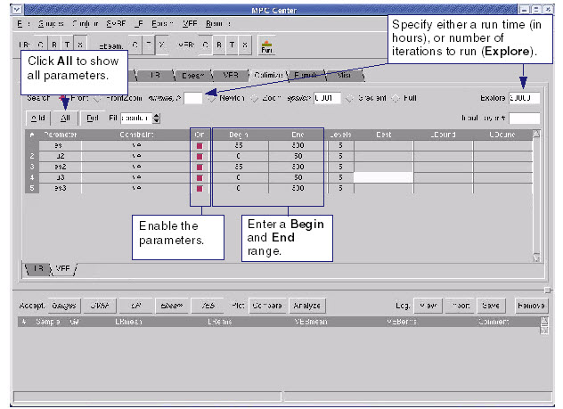

Enter VEB model
optimization parameters in MPC Center.
Procedure
- Click the Optimize tab. In the Optimize page,
click the VEB sub-tab.
Figure 1. Optimize Tab (VEB
Sub-Tab Displayed)
- In the VEB tab of the Optimize page,
click All to see all
the parameters from the gauge file.
- Enable the parameters you
want to optimize by clicking the radio button in the On column.
- Set lower and upper bounds
by entering Begin and End ranges for your enabled
parameters.
- Set either the number of iterations
to run in the Explore field,
or a run time value in the Runtime field
(the H stands for number
of Hours).
- Leave Fit at Absolute and Front search.